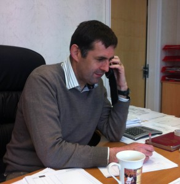

|

John Harvey, Managing Director |
Harvey Homes of Distinction Ltd was established in 2000, by Mr John Harvey MCIOB. John and his wife Joanne have been married for almost 30 years and have a daughter and three sons. Apart from his family, John has two great passions in his life — road cycling and building!
After studying Building Management at Liverpool Polytechnic (now Liverpool John Moores University), John has achieved over 30 years experience in all aspects of the building industry, mostly at management and senior management/ director level. He is a past Chairman of the Chartered Institute of Builders for North Wales and Chester and has won more of the highly coveted LABC North Wales Excellence Awards than any other small building company in North Wales (13 times), having won the All Wales award twice and reaching the UK finals on both occasions, the second of which will be held in London in November 2014! He has also won awards from the NHBC Pride in the Job scheme from the Federation of Master Builders.
Although winning these awards is a great privilege, to John the greatest reward of all is to see the joy his properties bring to his clients. He offers his clients bespoke homes of outstanding quality -and to ensure this, he personally visits the sites almost every day throughout construction, guaranteeing great attention to detail and making himself available to clients to discuss any concerns they may have throughout the process. Some clients have gone on to purchase further properties from the company and most have kept in touch and are regarded as friends of John and his wife. Most are more than willing to be contacted by potential purchasers to give Harvey Homes of Distinction a testimonial.
All homes are built with a 10 year NHBC guarantee and John and Joanne are only too happy to meet with potential purchasers to discuss our properties and show detailed photographs of previously constructed homes, to demonstrate the quality of the finishes the client can expect to find.
The Company also offer a comprehensive contracting service, so if you have your own piece of land with planning consent and would like us to build your home, please do not hesitate to contact us.
Harvey Homes of Distinction are always looking for quality pieces of land in good areas of North Wales and Wirral , preferably with outline permission.
When my wife Joanne and I decided to start our own house building company twelve years ago, we wanted to provide our clients with outstanding quality and customer service and to create stunning properties constructed with the finest attention to detail.
As the parents of four young children, we had visited lots of new homes, which all seemed to have low ceilings, very small bedrooms and living rooms – and kitchens which looked lovely at first glance, but wouldn’t necessarily be practical for a large family. Often the cheapest of materials were used on these properties, they were flimsy and no thought was given to layout – finishes were often very poor. Aware of the huge sacrifices and financial commitments people take in buying a home, we wanted to offer the best materials, the best workmanship and real value for money. We knew our properties wouldn’t be the cheapest, but they would be the best.
So, we sat down together and thought about what was really important for a family home…. A good sized kitchen and family room, where people could gather and chat about their day. It had to be light, airy, with all appliances easy to hand and with lots of space to cook and serve food. A lounge with nice high ceilings , so that one could hang beautiful light fittings, with deep skirtings and architraves, to give the home a luxurious and solid feel and with a feature fireplace to give the place a nice cosy feel in the winter – and all with plenty of sockets. Beautiful travertine or oak floorings to halls and kitchens to give an elegant feel to the home and bedrooms with plenty of room to feel relaxed, with lots of space for storage – and of course sumptuous and yet practical bathrooms in which to wind down at the end of a heavy day.
Our company has led the way in the Conwy area of constructing properties with rainwater harvesting and ground source or air source heating systems, all of which add to the sustainability and renewable elements, which are now being so actively encouraged by the government.
Coupled with such little luxuries as integral vacuum systems, and more recently cabling for home visual, audio and computer systems we felt we had thought of the perfect homes – and judging by the amount of clients who have commissioned us to construct their properties, it seems that plenty of people agree with us!
We spend hours and hours looking at bricks in different lights at different times of day and match the bricks to the best quality roofing slate, clay or concrete tiles, to gain the most aesthetically pleasing look to the house – and our past times are often spent visiting various exhibitions and shows to keep up to date with the most innovative and new ideas in house building. All of these small details both internally and externally to a home are what we hope, makes our company so unique.
We construct both speculative build properties and properties for clients who have already acquired their own piece of land. We are happy to meet with clients and architects from the very beginning to help and advise – with John’s wealth of expertise he is able to put forward suggestions that clients and even their architects had not considered, which is often invaluable.
We feel our greatest accolade is that most of our clients stay in touch with us long after the construction of their home – and we are pleased to call them our friends. We have a long list of clients who would be only to happy to recommend us and put any potential client’s mind at ease.
regards,